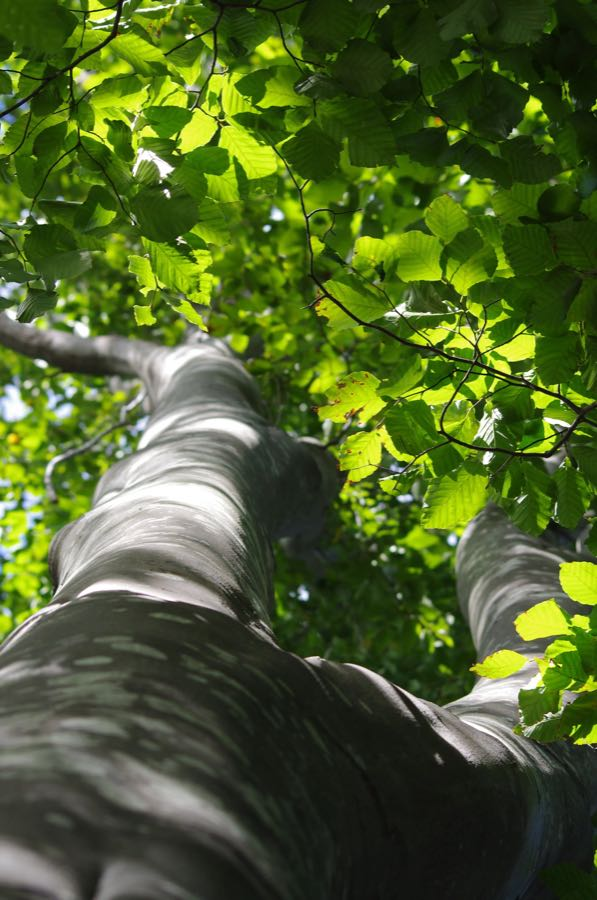

CS grad. Knoxville. I write software on weekdays and walk uphill on weekends. This is my space to show a little bit about me, the things I enjoy, and the projects I work on.

Fagus grandifolia
Easy to recognize even from a distance — smooth, pale gray bark that stays smooth for the tree's whole life, unlike almost every other hardwood. Beeches hold onto their dried, papery leaves through much of winter, so a beech grove in January still looks half-dressed.
That smooth bark is also why beech trees are the most carved-on trees in America — old initials can stay legible for decades.
Range · Eastern U.S. & SE Canada